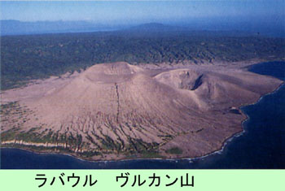

|
第４５ デスマスク
 『デスマスク』って何だ？『デスマスク』とは、戦死者の顔を石膏で固めて作った死者の石膏細工の事だと言う。そんな物を後方基地のポートモレ スビーまで持ち帰るとは理解できない事でした。 日本軍には、『デスマスク』をご遺族に届ける習慣はなかった。そんな考え方は日本にはなく、戦争の考え方が全然違 っていた事を知りました。 敵は我々の想像を遥かに越えた余裕のある戦争をしているな！という実感だけが湧いて来ました。彼我の物量の差は余 りにもかけ離れていました。 デスマスクと言う言葉は耳慣れしない言葉でした。昔（昭和２年頃）、小学校の理科室に石膏細工で作った人間の顔が あった事を思い出し、あれだなあと想像しました。敵は贅沢だなあと思い、事ごとさように敵は余裕を持って日本軍を攻 撃して来ました。今日もまた、ダグラス輸送機が上空を飛んでいく。我々は黙って放心したようにその輸送機を眺めてい ました。 |